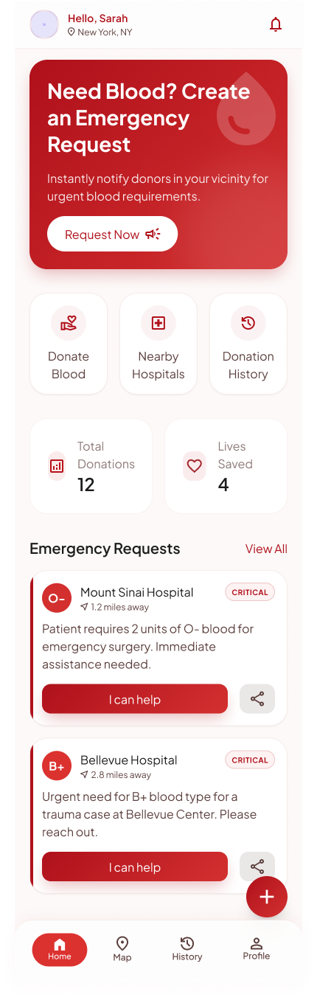
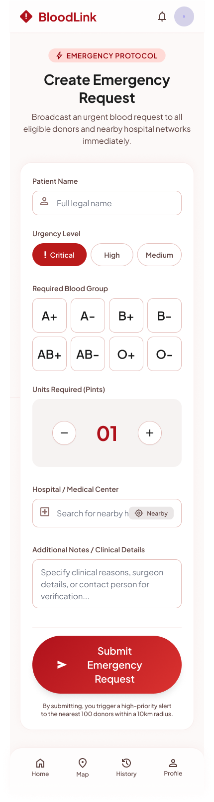
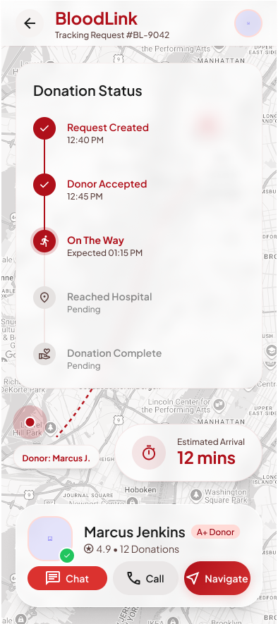
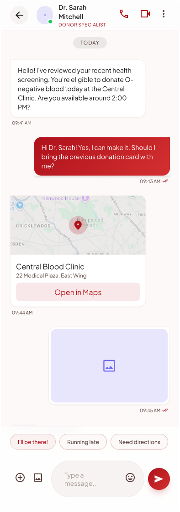
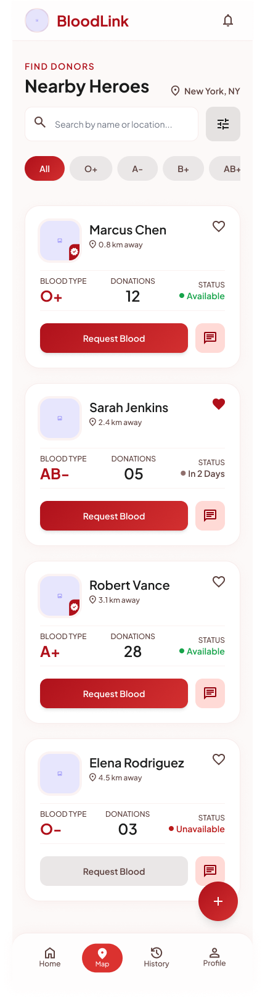
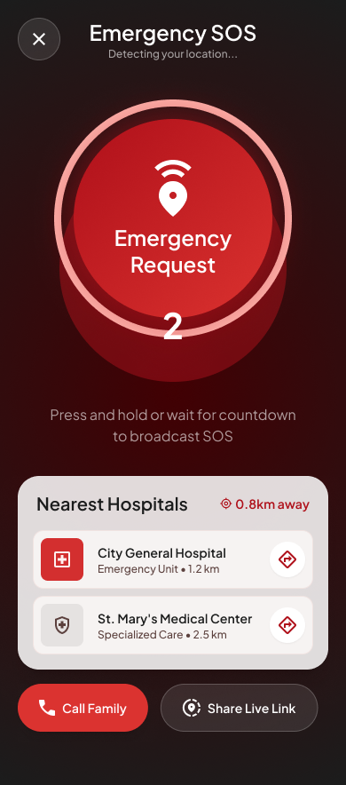

Click outside to close
A unified real-time platform connecting patients, donors, hospitals, and NGOs to reduce emergency response time from hours to minutes.
BloodLink is a mobile and web platform designed to bridge the gap between blood donors and people in urgent need of blood. During medical emergencies, finding a compatible blood donor is often a stressful and time-consuming process. Existing methods rely heavily on hospitals, blood banks, NGOs, social media posts, and personal networks, which can delay critical treatment.
BloodLink simplifies this process by creating a location-based network of verified blood donors. Every registered user becomes a potential donor, and anyone can submit an emergency blood request through the app. The platform automatically identifies nearby eligible donors based on blood group, location, and donation eligibility, allowing patients to receive help faster.
The project focuses on creating an intuitive, trustworthy, and accessible digital experience that supports patients, donors, hospitals, and healthcare organizations while encouraging regular voluntary blood donation.
Every day, patients require blood due to accidents, surgeries, childbirth, cancer treatment, and other medical emergencies. Although many individuals are willing to donate blood, there is no efficient system that connects donors with patients in real time.
The current process is fragmented and highly dependent on manual communication. Families often contact hospitals, blood banks, NGOs, friends, or social media communities to search for compatible donors. This process is stressful, time-consuming, and often results in delayed treatment.
Hospitals also face challenges in maintaining sufficient blood inventory, particularly for rare blood groups. Existing donor databases are frequently outdated, making it difficult to identify eligible and available donors during emergencies.
BloodLink provides a smart, location-based emergency blood donation platform that enables fast and secure communication between patients and verified blood donors.
Every user registers as a donor by completing their personal profile and medical eligibility information. When someone needs blood, they can create an emergency blood request directly from the app. The system automatically identifies nearby eligible donors based on their blood group, location, donation history, and availability.
Instead of manually searching through hospitals, NGOs, or social media, patients can quickly reach verified donors through one centralized platform. Real-time notifications, live request tracking, and in-app communication help reduce response time and improve coordination throughout the donation process.
The platform also promotes regular voluntary blood donation by providing donation history, achievement badges, reminders, and eligibility tracking. Medical eligibility is automatically updated after each donation, ensuring donors are contacted only when they are legally eligible to donate again.
Blood donation is one of the most critical healthcare services, yet thousands of patients struggle to find compatible blood during emergencies. Despite the presence of blood banks, hospitals, NGOs, and donor communities, there is no unified real-time platform that efficiently connects patients with nearby eligible blood donors.
This project aims to design a digital ecosystem that minimizes the time required to find blood donors while improving coordination between donors, hospitals, and patients.
Total Participants: 37
⏱ Average response time: 2–12 hours
National blood bank platform
✓ Inventory management
✗ Limited real-time donor matching
Trusted organization
✓ Donation campaigns
✗ Limited emergency peer-to-peer matching
Donor registration & basic search
✓ Donor registration
✗ Poor verification
Current solutions do not provide:
Age: 30 · Office Employee
Goal
Find compatible blood within one hour.
Pain Points
Age: 24 · Student
Goal
Donate blood safely when needed.
Pain Points
Age: 38 · Emergency Coordinator
Goal
Arrange blood quickly for critical patients.
Pain Points
Need blood → Search → Contact hospital → Wait → Donor found → Hospital → Donation complete
Pain Points
Waiting, uncertainty, repeated calls
Opportunity
Automated nearby donor matching
Register → Receive notification → Review request → Accept → Navigate → Donate
Pain Points
Incomplete information, distance
Opportunity
Verified requests and smart filtering
• Emergency response time is the biggest problem.
• Trust and verification are essential for both donors and patients.
• Hospitals need a centralized system for donor coordination.
• Donors prefer verified requests with complete information.
• Intelligent location-based matching can significantly improve response rates.
• Privacy controls are important to encourage donor participation.
How might we reduce the time required to find compatible blood donors?
How might we help hospitals connect with verified nearby donors instantly?
How might we increase donor trust and response rates?
How might we protect donor privacy while enabling emergency coordination?
How might we create a unified platform for patients, hospitals, NGOs, and donors?
Explore the key screens of the BloodLink mobile application.

Quick access to emergency requests and donor matching

Create and manage emergency blood requests

See donor location in real-time

Real-time communication between patients and donors

Manage profile, donation history, and eligibility

Notification for emergency request
The research revealed that the primary challenge is not the shortage of willing donors, but the lack of an efficient, trusted, and real-time coordination system. Existing processes rely heavily on manual communication, causing delays during emergencies. BloodLink addresses this gap by introducing verified donor profiles, intelligent location-based matching, real-time notifications, hospital collaboration, and transparent request tracking, creating a faster and more reliable emergency blood donation ecosystem.